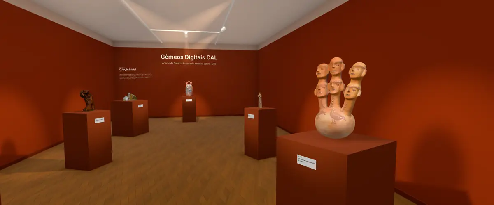

Universidade de Brasília · Casa da Cultura da América Latina
Gêmeos Digitais CAL
Obras do acervo da CAL escaneadas em 3D para visitar de qualquer lugar: gire, aproxime e observe cada detalhe da peça.
– de 20 obras digitalizadas
Obras mais recentes
Ver todas →
Novo
Museu virtual
Caminhe por salas inspiradas nas exposições da CAL, uma para cada coleção, e examine cada obra de perto — no computador ou no celular.
Entrar no museuO projeto
Preservar e abrir o acervo
A CAL reúne cerca de 3.000 obras de arte e cultura latino-americana. Este projeto de extensão da UnB digitaliza parte desse acervo em Gêmeos Digitais — réplicas 3D de alta fidelidade — para preservação e para que qualquer pessoa possa visitá-las pela internet.
As fichas técnicas e o registro museológico de cada peça continuam no Acervo CAL.
Conheça o processo →- EscaneamentoA peça é capturada com um scanner 3D portátil, na própria CAL.
- TratamentoA malha é limpa, os buracos preenchidos e a textura ajustada.
- PublicaçãoO modelo é otimizado para a web e entra neste site.